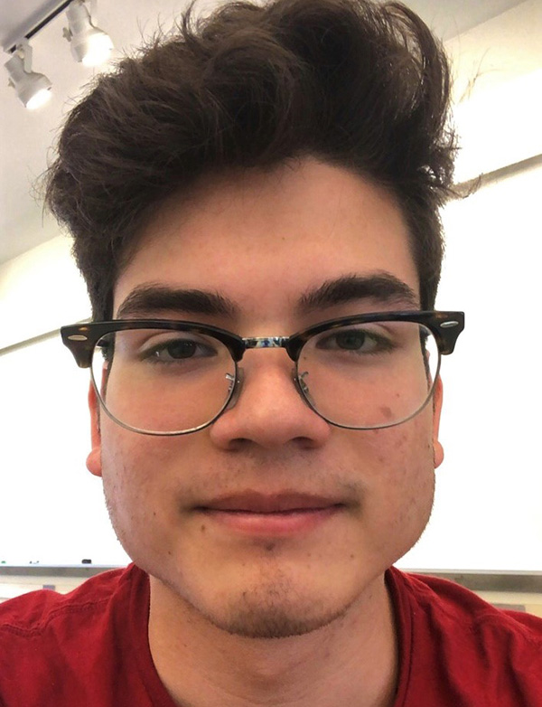

UROP / MEng with us
Before applying please read the information below carefully.
What do we look for in a UROP / MEng?
- When getting started in our lab, UROPs / MEng students typically start out by supporting one of our PhD students or postdocs on their research project.
- These research projects will be submitted for publication at the top HCI conferences ACM CHI and ACM UIST with the UROP / MEng-es co-authoring the papers and in some cases also traveling to the conference to give part of the talk or a live demo.
- We only look for UROPs seriously interested in becoming part of our research group. Each research project is important for the career of one of our PhD students or postdocs--we rely on each UROP and MEng to be a reliable team member and committed to making the project a success.
- In turn, you will be a member of a family-style research team with great mentoring, learn many new skills, and have a professional looking project on your portfolio.
- While we love to hear your own project ideas, please understand that the standard path in our lab is to first join an on-going research project with a senior mentor (PhD student or postdoc). Identifying a novel research contribution often takes years of training and is even a hard task for a mid-level PhD student.
UROP: Time Commitment + Pay/Credits
- UROPs will work ca. 8-10 hours per week. We care about outcomes and do not track your hours. However, we expect everyone to be present in the lab for most of this time to keep the communication paths short.
- You can do your UROP for pay or for credit.
- Please reach out before the following deadlines: spring semester: February 1, summer semester: April 1, fall semester: September 1, IAP: December 1).
- What if I don't have the skills yet? We do not expect you to already know everything--if you love the project and you are willing to put in the energy and time, we will be happy to teach you the necessary skills.
MEng: Time Commitment + Pay
- MEng-es are expected to spend at least 20 hours per week on their project. We care about outcomes and do not track your hours. However, we expect everyone to be present in the lab for most of this time to keep the communication paths short.
- You can do 2-, 3-, or 4-semester MEng-Thesis projects.
- Before applying to the lab, you need to have secured a TA position since we don't have enough funding to support MEng students (please mention the TA position in your email).
Application Process
- please look at the list of available UROP/MEng openings
- email the PhD student or postdoc who leads the project
- include the following information:
- your CV
- a website showing your previous projects or a project portfolio as pdf
- your latest grade transcript
- two names of people who we can ask for a short recommendation (e.g., previous UROP or internship mentors)
- when you would like to start
- you can also send an email to Prof. Mueller concerning general questions (e.g., how does MEng-ing work) but to join a specific project you need to talk to the project lead (PhD or postdoc)
Current Topics
All of our project openings are posted on the UROP portal.
Note that this does not mean they are only for UROPs , MEng-es can also reach out to us for those projects.
Current UROP/MEng Openings:
- SliceHub: An Ecosystem for Re-using, Exploring, and Sharing of Slicing Results
- 3D Sensors for Rapid Prototyping
- Making a Machine that Makes Machines
Previous Projects (2017 - 2020)
Below you find a summary of projects that resulted in published research papers with UROPs and MEng-es co-authoring the papers.

This project was led by HCIE Postdoc Michael Wessely.


Carlos Castillo (UROP): This project included an end-to-end fabrication pipeline from a digital design tool to the fabrication of large UIs using airbrush spraying. I implemented the digital design toolkit in the 3D editor Blender. I implemented a set of tools for touch sensors, sliders, proximity sensors and electroluminescent displays that lets users draw them on a 3D object. The full design can be exported as 2d stencils and as 3D projections. Tools/Programming Languages used: Python(Blender), Processing(Java). MIT EECS Licklider Best UROP Award 2020
Jackson Snowden (UROP): I created a capacitive touch sensing driver on an Arduino platform for sensing interactions with sprayed-on contacts. Then, touch inputs were used to drive Philips Hue lights using a custom Python script and to play audio using an Arduino-SD card interface.
I also created a touch display driver by utilizing a switching circuit to deliver power to an electroluminescent display while receiving touch input from the same display. This required me to design and fabricate a custom circuit as well as write extensive Arduino software to drive the circuit. Later, I adapted the existing touch sensing driver to do proximity sensing. This involved several filtering techniques to attain maximum sensitivity while rejecting 60 Hz noise from the surroundings. This new software was used to detect swipe gestures and control a photo album. Tools/Programming Languages used: This project primarily required me to use low-level C to get high performance from the Arduino. I was also able to prototype some simple circuits, create a multi-layer PCB design, and fabricate the final PCB by hand.

This project was led by HCIE PhD student Junyi Zhu.


Lotta Blumberg (MEng): Explored various fabrication methods for CurveBoards and finalized the 3D printing + conductive silicone mixing & injection fabrication pipeline. Fabricated various CurveBoard models, including bracelet, helmet, headphones, frisbee etc. Evaluated the conductivity & durability of the conductive silicone, and evaluated the fabricated CurveBoards via a user study. Tools/Programming Languages used: 3D printer, conductive inkjet printing, conductive silicone, Arduino, C.
Yunyi Zhu (SuperUROP): Developed and polished the CurveBoard interactive 3D editor that can convert an arbitrary geometry into a CurveBoard model. Designed various CurveBoard models, including navigation helmet, interactive headphones, frisbee. Tools/Programming Languages used: Rhino3D.
MIT EECS Best SuperUROP Award 2019
MIT EECS Best SuperUROP Award 2019
Xin Wen (UROP): Xin helped out the last couple of weeks building examples. Xin built an interactive CurveBoard navigation helmet for cyclists. The helmet indicates the routing direction via vibration buzzers on right and left sides, and has turning and stop signal led matrices. Tools/Programming Languages used: Rhino 3D, 3D printer, Arduino, C.
Kevin Shum (UROPs): Kevin also hopped onto the project to help with last minute example building. Kevin built a pair of interactive CurveBoard headphones that is capable of receiving radio and music playing, with sound frequency visualization on a led matrix. Tools/Programming Languages used: Rhino 3D, 3D printer, Arduino, C.
Jessica Quaye (UROPs): Finally, Jessica helped with example by building the circuit on CurveBoard trinity bracelet and Utah Teapot models shortly before the deadline. Tools/Programming Languages used: Rhino 3D, 3D printer, Arduino, C.

This project was led by HCIE PhD student Doga Dogan.


Andrew Churchill: Developed an Android application that can detect subtle patterns on 3D printed objects using the OpenCV image processing library. Utilized algorithms for different image processing methods in Java and C, including 2D Fourier transforms and adaptive thresholding. Tools/Programming Languages used: OpenCV.
Leon Cheng (UROP): Developed an interactive device prototype using an Arduino board that identifies users by sensing their 3D printed objects. Tools/Programming Languages used: Arduino, 3D printer.
Previous UROPs/MEng-es
Xin Wen (6-3, UROP/SuperUROP/UTA)

- implemented 3D modeling plugin for research project ColorMod + co-authored ACM CHI 2018 paper
- presented ColorMod at ACM CHI conference in Montreal as talk and live demo (3000 attendees)
- ColorMod mentioning Xin covered by BBC, CNN, and was a main spotlight on MIT website
- MIT EECS Best UROP Award for her work on ColorMod
- path in the lab: UROP summer 2017, SuperUROP fall 2017/spring 2018, UTA for Prof. Mueller's class 6.810 Engineering Interactive Technologies in fall 2018


Lotta Blumberg (6-1, UROP/MEng/TA)

- build adaptive hardware prototype using 3D printing & electronics + co-authored Adaptive Learning paper (under submission)
- currently working on two projects with PhD student Junyi Zhu: silicone casting 3D breadboards and corresponding 3D modeling tool + making minutiarized custom PCB boards (to be submitted as two papers to ACM UIST 2019)
- path in the lab: student in Prof. Mueller's class 6.810 Engineering Interactive Technologies in fall 2017), UROP IAP/spring 2018, MEng starting summer 2018, TA for 6.810 in fall 2018